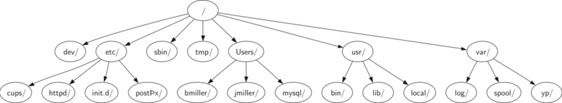
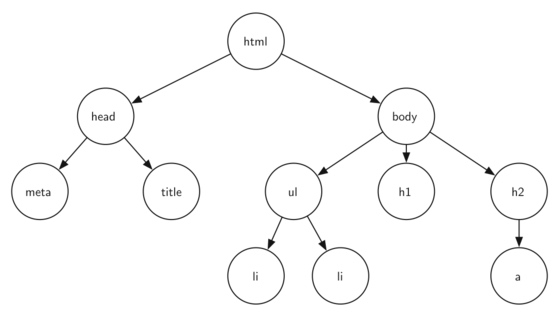
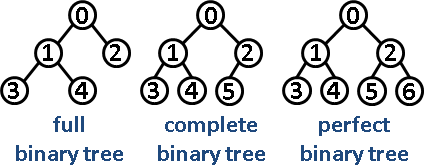

树(tree)是一种抽象数据类型（ADT），用来模拟具有树状结构性质的数据集合。它是由\(n\)个有限节点组成一个具有层次关系的集合。树在计算机科学里应用广泛，包括操作系统，图形学，数据库和计算机网络。树和真正的树有许多相似的地方，也包括根、树枝和叶子，它们的不同在于计算机中的树的根在顶层而它的叶子在底部。它具有以下的特点：
- 树是分级的，即树的顶层部分更加宽泛，而底部更加具体
- 一个节点（node）的所有子节点（children）和另一个节点的子节点是完全独立的
- 每个它的叶节点（leaf）都是不同的
定义
每个树或者为空，或者包含一个根节点和 0 个或多个子树，其中每个子树也符合这样的定义。每个子树的根节点和其父树的根节点之间通过边相连。
A tree is either empty or consists of a root and zeros or more subtrees, each of which is also a tree. The root of each subtree is connected to the root of the parent tree by an edge.
树的应用
文件系统。在文件系统中，磁盘的分支或者说子目录都是运用了树来构建的。下图展示了Unix文件系统的部分的分层情况。
网页。下图是一个利用超文本标记语言（HTML）编写的简单网页，以及构成网页的超文本标记语言中的标签相互关联关系所构成的树。
<html xmlns="http://www.w3.org/1999/xhtml" xml:lang="en" lang="en">
<head>
<meta http-equiv="Content-Type" content="text/html; charset=utf-8" />
<title>simple</title>
</head>
<body>
<h1>A simple web page</h1>
<ul>
<li>List item one</li>
<li>List item two</li>
</ul>
<h2><a href="http://www.cs.luther.edu">Luther CS </a><h2>
</body>
</html>

树的术语
节点（Node）
节点是树的基本构成部分。它可能有其他专属的名称，我们称之为“键（key）”。一个节点也可能有更多的信息，我们称之为“负载”。虽然负载信息和树的许多算法并不直接相关，但是它对于树的应用至关重要。边（Edge）
边也是树的基本构成部分。边连接两个节点，并表示它们之间存在联系。除了根节点外每个节点都有且只有一条与其他节点相连的入边（指向该节点的边），每个节点可能有许多条出边（从该节点指向其他节点的边）。根节点（Root）
根节点是树种中唯一一个没有入边的节点。在文件系统中，“/”是树的根节点。路径（Path）
路径是由边连接起来的节点的有序排列。例如：（动物界——脊索动物门——哺乳动物纲——食肉动物目——猫科——猫属——家猫）就是一条路径。子节点集（Children）
当一个节点的入边来自另一个节点时，我们称前者是后者的子节点，同一个节点的所有子节点构成子节点集。在文件系统中，节点log/,spool/,yp/构成节点var/的子节点集。父节点（Parent）
一个节点是它出边所连接的所有节点的父节点。在文件系统中，节点var/是节点log/,spool/,yp/的父节点。兄弟节点（Sibling）
同一个节点的所有子节点互为兄弟节点，在文件系统树中节点etc/和节点usr/是兄弟节点。子树（Subtree）
子树是一个父节点的某个子节点的所有边和后代节点所构成的集合。叶节点（Leaf Node）
没有子节点的节点成为称为叶节点。层数（Level）
一个节点的层数是指从根节点到该节点的路径中的边的数目。定义根节点的层数为 0。高度（Height）
树的高度等于所有节点的层数的最大值。图 2 中树的高度为 2。
树的种类
- 无序树：树中任意节点的子节点之间没有顺序关系，这种树称为无序树，也称为自由树；
- 有序树：树中任意节点的子节点之间有顺序关系，这种树称为有序树；
- 霍夫曼树（用于信息编码）：带权路径最短的二叉树称为哈夫曼树或最优二叉树；
- B树：一种对读写操作进行优化的自平衡的二叉查找树，能够保持数据有序，拥有多余两个子树；
- 二叉树 (
Binary Tree)：每个节点最多含有两个子树的树称为二叉树；- 完美二叉树/满二叉树 (
Perfect Binary Tree): 一个深度为\(k(>0)\)且有\(2^(k+1) - 1\)个结点的二叉树 - 完全二叉树 (
Complete Binary Tree)：对于一颗二叉树，假设其深度为\(d(d>1)\)。除了第d层外，其它各层的节点数目均已达最大值，且第d层所有节点从左向右连续地紧密排列，这样的二叉树被称为完全二叉树，其中满二叉树的定义是所有叶节点都在最底层的完全二叉树; - 完满二叉树（
Full Binary Tree): each node either a leaf or possesses exactly two child nodes - 二叉搜索树（
Binary Search Tree: a binary tree that satisfies the binary search tree property, which states that the key in each node must be greater than or equal to any key stored in the left sub-tree, and less than or equal to any key stored in the right sub-tree.- 平衡二叉树（
Balanced Binary Search Tree, AVL树）：any node-based binary search tree that automatically keeps its height (maximal number of levels below the root) small in the face of arbitrary item insertions and deletions.- AVL Tree: 任何节点的两个子树的高度最大差别为1
- 平衡二叉树（
- 完美二叉树/满二叉树 (
Full, Complete, and Perfect Binary Tree


树的存储
由于对节点的个数无法掌握，常见树的存储表示都转换成二叉树进行处理，子节点个数最多为2。
- 嵌套列表：将数据结构存储在固定的数组中，然在遍历速度上有一定的优势，但因所占空间比较大，是非主流二叉树。二叉树通常以链式存储。
- 节点和引用
- 二叉堆